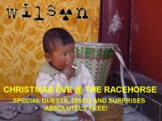
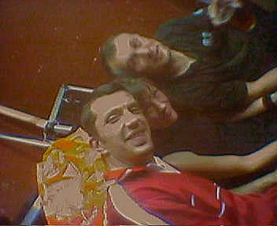
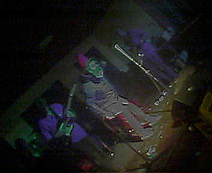
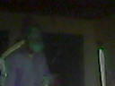
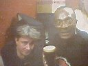
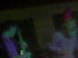

|
|
 |
 |
Gigs
::
2003
:: Dec24
|

Venue: The Rockin' Horse
Where: Northampton England
When:
Sunday, Friday 24th, 2003
Opening: Rocket Hi-Fi System
Played:
Dark Agenda
God's Green Earth,
Critters
,
Every Saturday Night
,
![[listen to Quality People]](../../images/icons/iconMP3.gif) Quality People
,
Police Chief
,
Buffalo Sniper
,
Istanbul Connection Quality People
,
Police Chief
,
Buffalo Sniper
,
Istanbul Connection
Notes
Those ever cheerful popular music hall entertainers Wilson will be makin' 'em laff, makin' 'em cry in a festiff
stylee at The Rockin' Horse, Northampton NN1 on Christmas Eve. (That's Wednesday 24th December, folks). Wilson will
be capably supported by the reggae sounds of the Rocket Hi-Fi System. We may add another group, we don't know yet.
We're also aiming to make the event free to get in. So you know where to get your festiff jollies.
Headstone Says..

A return to action for the Wilson Five, as Mister E. Wilson succumbs to the slumber-related
after-effects of a festive feed.
With the Rocket Hi-Fi boys unable to make it, DJ Ethan comes to the rescue (direct from the hospital)
with a top set of dirty breakbeats, house and shouting. The night is free, the room fills up. In the
cupboard beside the stage there is a dense fog.
A decidedly croaky Headstone takes the stage. "Ladies and gents, the Authorities haven't been entirely
straight with you. Despite what you might have heard from the Administration, in fact...WE'VE got him."
For a second you can hear an entire pub going "What?"
And then he appears. Weaving to the beat like some grotesque, murderous parody of David Brent, sporting
an enormous parka and a Santa Claus hat and clutching a single microphone, the former president of Iraq
takes the stage.
Wilson and their new vocalist start up with an unusually slow version of Dark Agenda. Uh...can they do
that? I mean, doesn't it all come off a tape or something? The guitars are on Loud once again, and the
tune cuts up beautifully towards the end. Ocean tides, great black sheets of rain...sheep? That's right,
it's God's Green Earth, returned to haunt the pub with its heinous neo-prog-rock loping stride. And
here's MC Bot - ooh, he is a Master of Disguise! But oh no! Who's going to do the crime rap? Oh,
everybody. That's all right then. Third verse, same as the first but worse. As Critters kicks off, the
Rev. Lindsay Spence comes onstage to deliver some midnight mass of his own. Headstone and Misery hang on
for dear life as Lindsay and Bot howl at each other across the beats. Every Saturday Night follows,
bobbing and weaving. Then it's Quality People and Police Chief. Buffalo Sniper (one for the dads). Then
it's Istanbul Connection. About half way through there is an Istanbul Disconnection. Things spin out
into a big spacious dub. How can they be doing that, though? I'm bloody sure it's all coming off a tape.
Special guest vocalist and leader of the "Free World" (tm) G-Dub announces the End of the Civilised
World. Reg Presley (for it is he) declares it "GOOD!" The music picks up and turns into a demented surf
metal ska punk nightmare and crashes into a wall. "GOOD!" says Reg. Wilson have left the theatre.





Photos: Mark Cotton
|
No comments yet for this page
|
|
|

{kind=link}